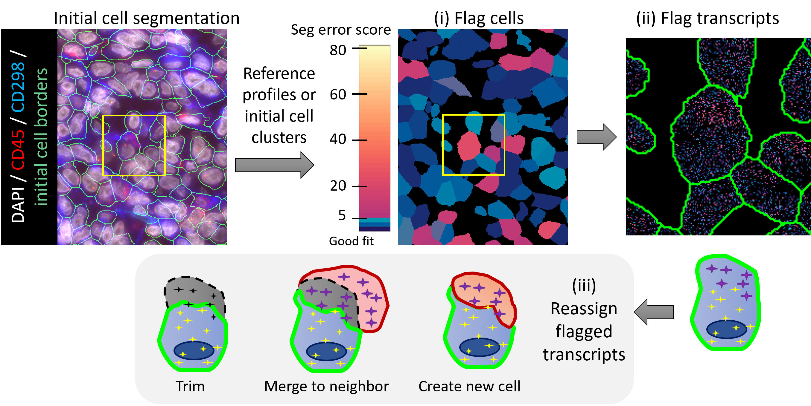
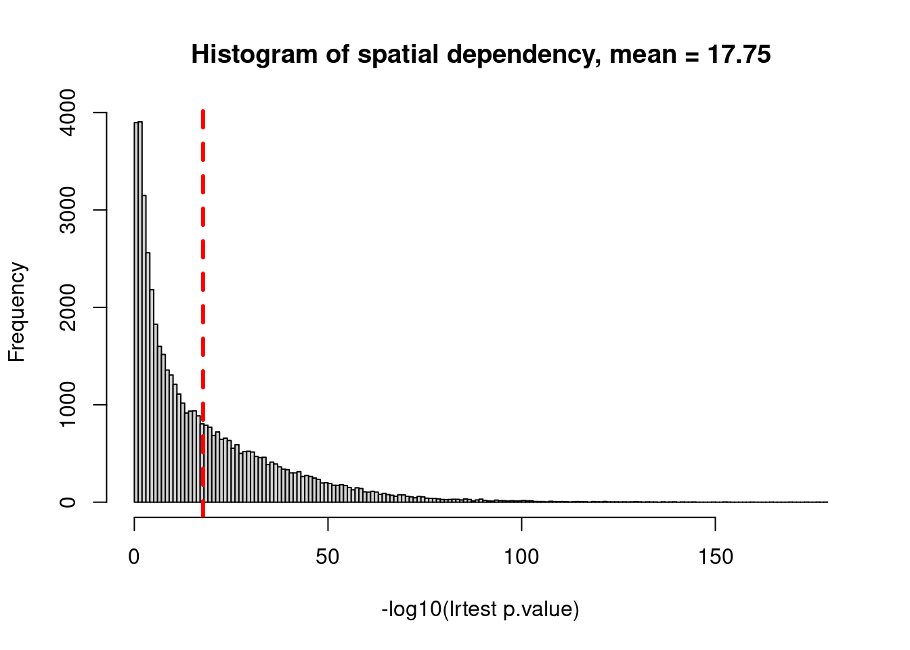
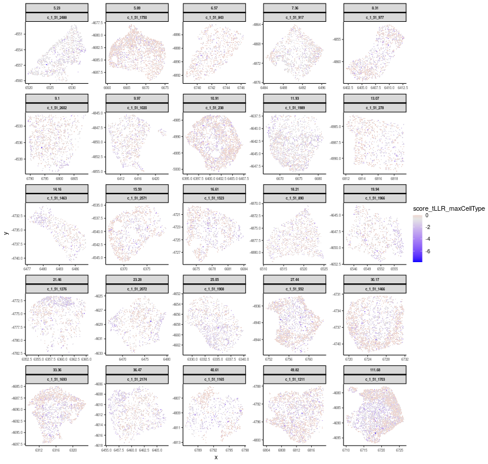

![]()
# load existing cell typing results
cellTypeRes <- readRDS("CellType_Accessory_Data/Pancreas_celltype_InSituType.rds")
validCells <- cellTypeRes[['cell_ID']]
clust <- setNames(cellTypeRes[['cell_types']], nm = cellTypeRes[['cell_ID']])1 Introduction
Accurate cell segmentation that assigns transcripts to cell locations is critical to data quality of spatial transcriptomics assays and the proper interpretation of downstream differential expression analysis results. But it’s very challenging for tissue sections where cells are tightly packaged with shared, 3D boundaries and uneven morphology staining.
The FastReseg R package offers a rapid way to evaluate the performance of existing cell segmentation and to perform refinement given the spatial transcriptional profiles.
- The evaluation process starts with a cluster-specific reference expression profiles that are either derived from cell typing of query spatial data set given its current image-based cell segmentation or from external non-spatial data sets, like scRNA-seq.
- Given the provided reference profiles, FastReseg algorithm scores individual transcripts for the goodness-of-fit within their respective cells based on the probability of each gene belonging to each cell type.
- FastReseg then scores each cell for its spatial dependency of transcript score profiles under its most likely cell type given the overall transcriptional profiles. As confirmed by the membrane-stained images, cells with boundary errors at the junction of different cell types, exhibit strong spatial dependency in their transcript score profile and thus can be easily identified.
- FastReseg further identifies the spatially connected groups of transcripts with low goodness-of-fit within incorrectly segmented cells.
- A set of heuristic rules on neighborhood cell typing and transcript number are then applied to the identified transcript groups to decide on the re-segmentation actions, like merging, splitting and trimming. The re-segmented results show no significant spatial dependency on transcript score of individual cells, suggesting the successful correction of poorly segmented cells.

You can find the FastReseg package here. See the corresponding tutorial inside the package for more details.
The required inputs for FastReseg include:
counts: a cell-by-gene counts matrix for entire dataset.clust: a vector of cluster assignments for each cell incounts; useNULLto automatically assign the cell cluster for each cell based on maximum transcript score of given the providedrefProfiles.refProfiles: a gene-by-cluster matrix of cluster-specific expression profiles; default =NULLto use external cluster assignments.transDF_fileInfo: a data.frame with each row for each individual file of per-FOV transcript data.frame, columns include the file path of per FOV transcript data.frame file, annotation columns likeslideandfovto be used as prefix when creating unique cell_ID across entire dataset.- when
NULL, use the transcript data.frametranscript_dfdirectly.
- when
This post will show you how to prepare your inputs if you have data assembled in the structure used by the Technology Access Program (TAP); similar outputs are available from the AtoMx™ Spatial Informatics Portal (SIP). You can download an example public dataset from here. The ReadMe associated with this example data set on pancreas shows the data structures of each file used in this post.
- Section 2 Prepare inputs from basic data files
- Section 3 Run segmentation evaluation
- Section 4 Run full pipeline to correct putative segmentation error identified
Like other items in our CosMx Analysis Scratch Space, the usual caveats and license applies.
2 Prepare inputs from basic data files
Here we start from the basic data files exported from AtoMx™ SIP.
While one can use cluster-specific expression profiles from other studies as refProfiles, here we take advantages of the existing cell typing derived from current cell segmentation in this data set and use it as clust.
Inspecting the cell typing results and the ReadMe associated with this data set, we can know that this data set uses c_[slide ID]_[fov ID]_[cell ID] format to get cell ids unique across entire data set.
We next to load raw expression matrix for all genes and cells with available cell typing results.
# load raw expression matrix and assign unique cell_ID to each one
counts <- data.table::fread("Pancreas_exprMat_file.csv")
# use same slide ID as the existing cell typing results
cell_ids <- paste0('c_1_', counts[['fov']], '_', counts[['cell_ID']])
# get valid gene names
all_rnas <- grep("fov|cell_ID|Negative|SystemControl",
colnames(counts), value = TRUE, invert = TRUE)
counts <- as.matrix(counts[, .SD, .SDcols = all_rnas])
rownames(counts) <- cell_ids
counts <- as(counts[validCells, , drop = FALSE], "sparseMatrix") We then load the transcript file which contains all molecules’ coordinates and cell segmentation information. For faster processing in downstream FastReseg pipeline that is paralleled by input transcript files for different spatial regions, we recommend to split the full transcript data into multiple files by FOV (Field of View) and export those per-FOV transcript information as individual csv files. We would pass their file paths to FastReseg functions through transDF_fileInfo data.frame.
fullTx <- data.table::fread("Pancreas_tx_file.csv")
# add unique id for each transcript
fullTx[['transcript_id']] <- seq_len(nrow(fullTx))
# remove extracellular transcripts which has cell_ID = 0 in tx file
fullTx <- fullTx[cell_ID !=0, ]
# keep only the necessary info
fullTx <- fullTx[, .SD, .SDcols = c('transcript_id', 'cell', 'x_global_px',
'y_global_px', 'z', 'target', 'fov')]
# split by FOV and export as per FOV csv file
txDir <- "perFOV_txFile"
if(!dir.exists(txDir)) dir.create(txDir)
allFOVs <- unique(fullTx[['fov']])
transDF_fileInfo <- lapply(allFOVs, function(fovId){
perFOV_filePath <- fs::path(txDir, paste0('fov_', fovId, '_tx_data.csv'))
data.table::fwrite(fullTx[fov == fovId, ], file = perFOV_filePath)
# since global coordinates of each molecule are available
# use 0 for stage coordinates to disable conversion of local to global coordinates
df <- data.frame(file_path = perFOV_filePath,
slide = 1,
fov = fovId,
stage_X = 0,
stage_Y = 0)
return(df)
})
transDF_fileInfo <- do.call(rbind, transDF_fileInfo)FastReseg evaluates segmentation in physical space and thus it’s preferred to convert all 3D coordinates into same unit. The relevant default parameters of FastReseg are set with respect to micrometer in coordinate unit. According to the ReadMe, the pixel size for this data set is 0.12028 µm per pixel and the z step size is 0.8 µm per z slice. We would pass this information to FastReseg functions to do the coordinate conversion. If your data is already in micrometer unit, you can use 1 for pixel size and z step to disable the conversion.
pixel_size <- 0.12028
zstep_size <- 0.8By default, FastReseg would use 75% of available cores on your PC to do parallel processing of per-FOV transcript files in batch. If you have big per-FOV transcript file size (200+ MB per file) or limited memory available, it’s recommended to reduce the amount of cores used. You can control the number of cores in use by passing percentCores argument to FastReseg wrapper functions or set the core number directly with options(mc.cores = X), where X is the number of cores you would like to use. The set option approach would overwrite the percentCores argument.
Note
Too many large FOVs being processed in same batch could hit the memory limit and abort the current processing. Below is an example error message when memory limit was reached.
Error in FUN(X[[i]], …) : subscript out of bounds
In addition: Warning messages:
1: In parallel::mclapply(X = seq_len(nrow(transDF_fileInfo)), mc.allow.recursive = TRUE, :
scheduled cores 1, 3, 4, 7, 8, 10, 11 did not deliver results, all values of the jobs will be affected
2: In parallel::mclapply(X = seq_len(nrow(transDF_fileInfo)), mc.allow.recursive = TRUE, :
scheduled core 12 encountered error in user code, all values of the job will be affected
Since the example data set in use is a Whole Transcriptome (WTx) spatial data set with high number of unique genes and large per-FOV transcript file size, here we cautiously reduce the % of core number to 0.25.
percentCores <- 0.253 Run segmentation evaluation
Now we have all the inputs needed to run FastReseg pipelines. For segmentation evaluation, one can use FastReseg::fastReseg_flag_all_errors() function to run through all the FOVs.
# path to output folder
outDir_flagErrors <- "res1f_flagErrors"
flagAll_res <- FastReseg::fastReseg_flag_all_errors(
counts = counts,
clust = clust,
refProfiles = NULL,
# one can use `clust = NULL` if providing `refProfiles`
transcript_df = NULL,
transDF_fileInfo = transDF_fileInfo,
filepath_coln = 'file_path',
prefix_colns = NULL, # to use existing cell IDs that are unique across entire data set
fovOffset_colns = c('stage_Y','stage_X'), # match XY axes between stage and each FOV
pixel_size = pixel_size,
zstep_size = zstep_size,
transID_coln = 'transcript_id',
transGene_coln = "target",
cellID_coln = "cell",
spatLocs_colns = c('x_global_px', 'y_global_px', 'z'),
extracellular_cellID = NULL,
# control core number used for parallel processing
percentCores = percentCores,
# cutoff of transcript number to do spatial modeling
flagModel_TransNum_cutoff = 50,
flagCell_lrtest_cutoff = 5, # cutoff for flagging wrongly segmented cells
svmClass_score_cutoff = -2, # cutoff for low vs. high transcript score
path_to_output = outDir_flagErrors, # path to output folder
return_trimmed_perCell = TRUE, # flag to return per cell expression matrix after trimming all flagged transcripts
ctrl_genes = NULL # optional to include name for control probes in transcript data.frame, e.g. negative control probes
)
# extract spatial evaluation outcomes of valid cells
modStats_ToFlagCells <- flagAll_res[['combined_modStats_ToFlagCells']]The function above returns the statistics for evaluating each cell for spatial dependent model against null model. Based on the P value lrtest_Pr or the negative log10 value lrtest_nlog10P, one can select for cells with strong spatial dependency in transcript score profile. Those cells are likely to contain contaminating transcripts for neighbor cells.
| transcript_num | modAlt_rsq | lrtest_ChiSq | lrtest_Pr | UMI_cellID | lrtest_nlog10P | tLLR_maxCellType | flagged | file_idx |
|---|---|---|---|---|---|---|---|---|
| 315 | 0.1076159 | 35.86547 | 0.0000419 | c_1_51_1 | 4.377932 | Macrophage | FALSE | 1 |
| 309 | 0.0744980 | 23.92246 | 0.0044256 | c_1_51_10 | 2.354028 | Ductal | FALSE | 1 |
| 1676 | 0.0976644 | 172.24037 | 0.0000000 | c_1_51_100 | 31.676496 | Ductal | TRUE | 1 |
| 753 | 0.0928050 | 73.34062 | 0.0000000 | c_1_51_1000 | 11.974934 | Ductal | TRUE | 1 |
| 892 | 0.1512712 | 146.30190 | 0.0000000 | c_1_51_1001 | 26.936616 | Ductal | TRUE | 1 |
| 1220 | 0.0802211 | 102.01879 | 0.0000000 | c_1_51_1002 | 17.211741 | Acinar.2 | TRUE | 1 |
# histogram for spatial dependency in all cells
tmp_flag <- which(!is.na(modStats_ToFlagCells$lrtest_nlog10P)) # exclude cells with too few transcript number
hist(modStats_ToFlagCells$lrtest_nlog10P[tmp_flag],
breaks = "FD",
xlab = "-log10(lrtest p.value)",
main = paste0("Histogram of spatial dependency, mean = ",
round(mean(modStats_ToFlagCells$lrtest_nlog10P[tmp_flag]), 2)))
abline(v = mean(modStats_ToFlagCells$lrtest_nlog10P[tmp_flag]), col="red", lwd=3, lty=2)
# cutoff to flag for cells with strong spatial dependency in transcript score profiles
flagCell_lrtest_cutoff = 5
modStats_ToFlagCells[['flagged']] <- (modStats_ToFlagCells[['lrtest_nlog10P']] > flagCell_lrtest_cutoff )
flagged_cells <- modStats_ToFlagCells[['UMI_cellID']][modStats_ToFlagCells[['flagged']]]
message(sprintf("%d cells, %.4f of all evaluated cells, \nare flagged for resegmentation with lrtest_nlog10P > %.1f.",
length(flagged_cells), length(flagged_cells)/nrow(modStats_ToFlagCells), flagCell_lrtest_cutoff))33210 cells, 0.6791 of all evaluated cells,
are flagged for resegmentation with lrtest_nlog10P > 5.0.Let’s visualize some flagged cells with various degrees of spatial dependency in transcript profiles
# focus on 1st per-FOV file
transcript_df <- read.csv(paste0(outDir_flagErrors, "/1_flagged_transDF.csv"))
rownames(modStats_ToFlagCells) <- modStats_ToFlagCells$UMI_cellID
cells_to_plot <- modStats_ToFlagCells[flagged_cells, 'lrtest_nlog10P']
names(cells_to_plot) <- flagged_cells
cells_to_plot <- cells_to_plot[flagged_cells %in% transcript_df[["UMI_cellID"]]]
cells_to_plot <- cells_to_plot[order(cells_to_plot, decreasing = T)]
cells_to_plot <- cells_to_plot[seq(1, length(cells_to_plot),
by = ceiling(length(cells_to_plot)/25))]
FastReseg::plotSpatialScoreMultiCells(chosen_cells = names(cells_to_plot),
cell_labels = round(cells_to_plot, 2),
transcript_df = transcript_df,
cellID_coln = "UMI_cellID",
transID_coln = "UMI_transID",
score_coln = "score_tLLR_maxCellType",
spatLocs_colns = c("x","y"),
point_size = 0.5)
You can see that cells with large lrtest_nlog10P value exhibited strong spatial dependency in their transcript score profiles under their best fitted cell type (i.e. score_tLLR_maxCellType). Below we would zoom in to one of the flagged cells (c_1_51_1211 with lrtest_nlog10P = 49.82) and visualize its transcript score profiles in 3D.
4 Run full pipeline to correct putative segmentation error identified
If cell segmentation correction is desired, one can use FastReseg::fastReseg_full_pipeline() function to not only flag but also correct the identified putative cell segmentation errors.
Note
The current defaults for separating out poor-fit transcripts are on the conservative ends. To make the separation more aggressive with less constraint in spatial neighborhood, please refer to the manual of e1071::svm() function on what arguments one can adjust and pass to the FastReseg functions via svm_args list variable. Example arguments include kernel type, scale, gamma and type of svm classification machine.
Include control probes
If you would like to keep the control probes, e.g. negative probes, in the post-resegmentation data, you can pass the names of those control probes as a vector to the function via ctrl_genes argument. Those ctrl_genes would be assigned with same transcript scores under all cell types and thus the only way they changed their cell ID assignment would be due to the presence of poor-fit transcriptional zone in proximity. Of note, to avoid significant interference from those ctrl_genes, it’s recommended to have total counts of those genes below 1% of total counts of all genes in each cell.
# path to output folder
outDir_full <- "res2_fullPipeline"
refineAll_res <- FastReseg::fastReseg_full_pipeline(
counts = counts,
clust = clust,
refProfiles = NULL,
# one can use `clust = NULL` if providing `refProfiles`
transcript_df = NULL,
transDF_fileInfo = transDF_fileInfo,
filepath_coln = 'file_path',
prefix_colns = NULL, # to use existing cell IDs that are unique across entire data set
fovOffset_colns = c('stage_Y','stage_X'),
pixel_size = pixel_size,
zstep_size = zstep_size,
transID_coln = 'transcript_id',
transGene_coln = "target",
cellID_coln = "cell",
spatLocs_colns = c('x_global_px', 'y_global_px', 'z'),
extracellular_cellID = NULL,
# control core number used for parallel processing
percentCores = percentCores,
# cutoff of transcript number to do spatial modeling
flagModel_TransNum_cutoff = 50,
# Optionally, one can set various cutoffs to NULL for automatic calculation from input data
# Refer to `FastReseg::runPreprocess()` for more details
# distance cutoff for neighborhood searching at molecular and cellular levels, respectively
molecular_distance_cutoff = 2.7, # 2.7um is recommended for CosMx RNA dataset
cellular_distance_cutoff = NULL,
# cutoffs for transcript scores and number for cells under each cell type
score_baseline = NULL,
lowerCutoff_transNum = NULL,
higherCutoff_transNum= NULL,
imputeFlag_missingCTs = TRUE,
# Settings for error detection and correction, refer to `FastReseg::runSegRefinement()` for more details
flagCell_lrtest_cutoff = 5, # cutoff to flag for cells with strong spatial dependency in transcript score profiles
svmClass_score_cutoff = -2, # cutoff of transcript score to separate between high and low score classes
groupTranscripts_method = "dbscan",
spatialMergeCheck_method = "leidenCut",
cutoff_spatialMerge = 0.5, # spatial constraint cutoff for a valid merge event
path_to_output = outDir_full,
save_intermediates = TRUE, # flag to return and write intermediate results to disk
return_perCellData = TRUE, # flag to return per cell level outputs from updated segmentation
combine_extra = FALSE # flag to include trimmed and extracellular transcripts in the exported `updated_transDF.csv` files
)The re-segmentation pipeline would generate new transcript data.frame and cell expression matrix after the segmentation refinement. The updated results should be treated as a new data set and go through the standard single-cell analysis pipeline, including QC, normalization, and cell typing, etc. While the updated_cellID matches with their original source cell ID in most cases, cells involved in the evaluation of a potential merging event may have their updated_cellID unrelated to their original source cell ID. You can track the change of cell assignment for each transcript group via either the reseg_actions returned by the pipeline function or the spatial coordinates of each transcript.
5 Conclusions
This post serves as a quick-start guide to use FastReseg package on spatial transcriptomic data set. The package has several parameters one can adjust to tune the identification of wrongly segmented transcript groups and the rules used for cell segmentation correction. These include
- cutoffs for spatial model evaluation and flagging for poor-fit cells & transcripts:
flagModel_TransNum_cutoff,flagCell_lrtest_cutoff,svmClass_score_cutoff; - distance cutoffs used to define neighborhood:
molecular_distance_cutoff,cellular_distance_cutoff; - method and rules used for grouping and separating poor-fit transcripts in space:
svm_args,groupTranscripts_method,config_spatNW_transcript; - cutoffs and rules used for segmentation correction:
score_baseline,lowerCutoff_transNum,higherCutoff_transNum - additional spatial constraint on merging event during error correction:
spatialMergeCheck_method,cutoff_spatialMerge
Many of those parameters have reasonable defaults for most spatial data sets and could be derived from your data using FastReseg::runPreprocess() function. For new user or new sample type, it’s recommended to process just one per-FOV transcript data using FastReseg::fastReseg_perFOV_full_process() functions first and check out the impact of the parameters chosen. Please refer to FastReseg tutorial, Modular functions for individual tasks section, for more details.